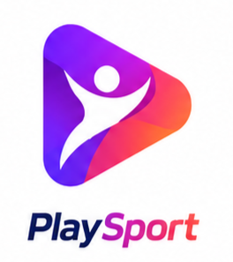

Proyectos
Estos son algunos de los proyectos más importantes que he desarrollado.
InfoTek — Tienda de Componentes con Comparador Avanzado
InfoTek es una aplicación web desarrollada como tienda de componentes informáticos con funcionalidades avanzadas de análisis y comparación. Se inspira en PcComponentes para la estructura, UserBenchmark para la comparación técnica y Binance para las gráficas dinámicas de precios.
El proyecto se desarrolló íntegramente con HTML, CSS y JavaScript, aplicando una arquitectura modular y diseño responsive. Para la gestión de datos se utilizó MongoDB, almacenando productos, imágenes, precios, historial y favoritos. Las gráficas de evolución de precios se implementaron con ApexCharts, permitiendo visualizaciones interactivas y claras.
El comparador de productos se construyó mediante selección con localStorage, filtrado dinámico y tablas técnicas, permitiendo comparar núcleos, hilos, frecuencia, precio y stock. Además, se añadieron buscador, filtros avanzados, favoritos, gestión de cuenta y carrito de compra, creando una experiencia completa similar a una tienda profesional.
Mi rol en el proyecto
Como líder del grupo, fui quien propuso la idea y dirigió la estructura general del proyecto. Me centré especialmente en aprender y trabajar con MongoDB, ya que nunca había construido una base de datos tan grande con productos y clientes. La experiencia me permitió mejorar en diseño de interfaces, manejo de datos y creación de herramientas útiles para el usuario.
Conclusión personal
El proyecto me gustó mucho ya que la idea la tenía pensada desde hace tiempo y tenía ganas de hacer una web desde cero con un estilo similar a PcComponentes, Amazon y otras tiendas online. Me enfoqué en aprender a trabajar con MongoDB y en construir una plataforma moderna, clara y transparente. Aunque no está desplegada online, InfoTek demuestra mi capacidad para diseñar, estructurar y desarrollar una aplicación completa y profesional.

PlaySport — Red Social Deportiva
PlaySport es una aplicación tipo Instagram enfocada exclusivamente en el mundo del deporte. Al registrarse, los usuarios seleccionan sus deportes favoritos para que el algoritmo adapte el feed “Para ti” según sus intereses, mostrando contenido relevante y personas que practican las mismas actividades.
La plataforma permite conectar con deportistas de la zona, descubrir clubes cercanos y enviar tu perfil como “currículum deportivo”. Los gimnasios y polideportivos también pueden publicar anuncios y promocionarse, creando un ecosistema completo donde usuarios, clubes y centros deportivos interactúan de forma natural.
Tecnologías utilizadas
PlaySport se está desarrollando con Supabase como backend principal, aprovechando su sistema de autenticación, base de datos PostgreSQL, almacenamiento y APIs en tiempo real. En el frontend estamos utilizando HTML, CSS y JavaScript mientras definimos la arquitectura final de la aplicación.
Estado del proyecto
Actualmente PlaySport está en fase de planificación y desarrollo inicial. Estamos definiendo la arquitectura, las funcionalidades principales y el diseño de la interfaz junto a mi compañero de equipo.
Mi rol en el proyecto
Participo en la creación de la idea, el diseño del sistema, la estructura del algoritmo de recomendaciones y la planificación de las funciones sociales y deportivas. También colaboro en la organización del proyecto, la integración con Supabase y la toma de decisiones clave.
Conclusión personal
PlaySport es un proyecto que me motiva especialmente porque combina mis dos pasiones: el desarrollo web y el deporte. Me encanta la idea de crear una red social que realmente ayude a la gente a conectar, mejorar y encontrar oportunidades deportivas cerca de su zona.